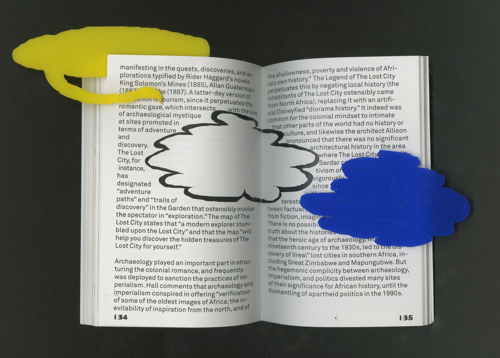
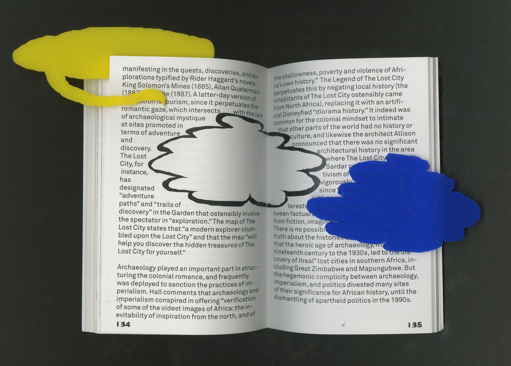
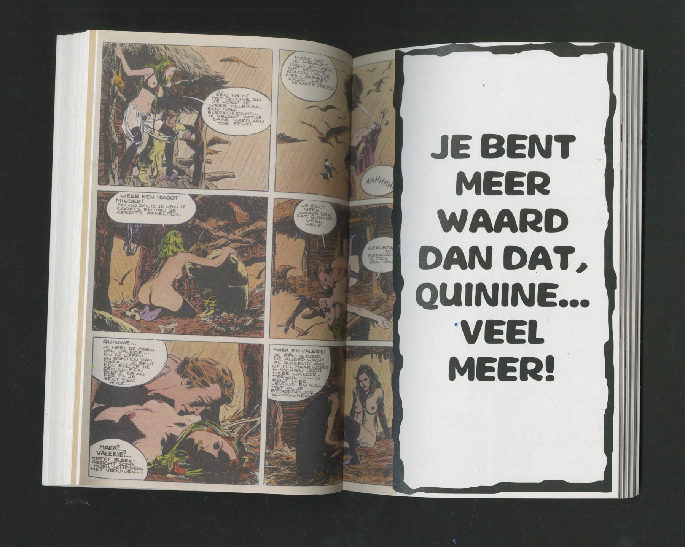
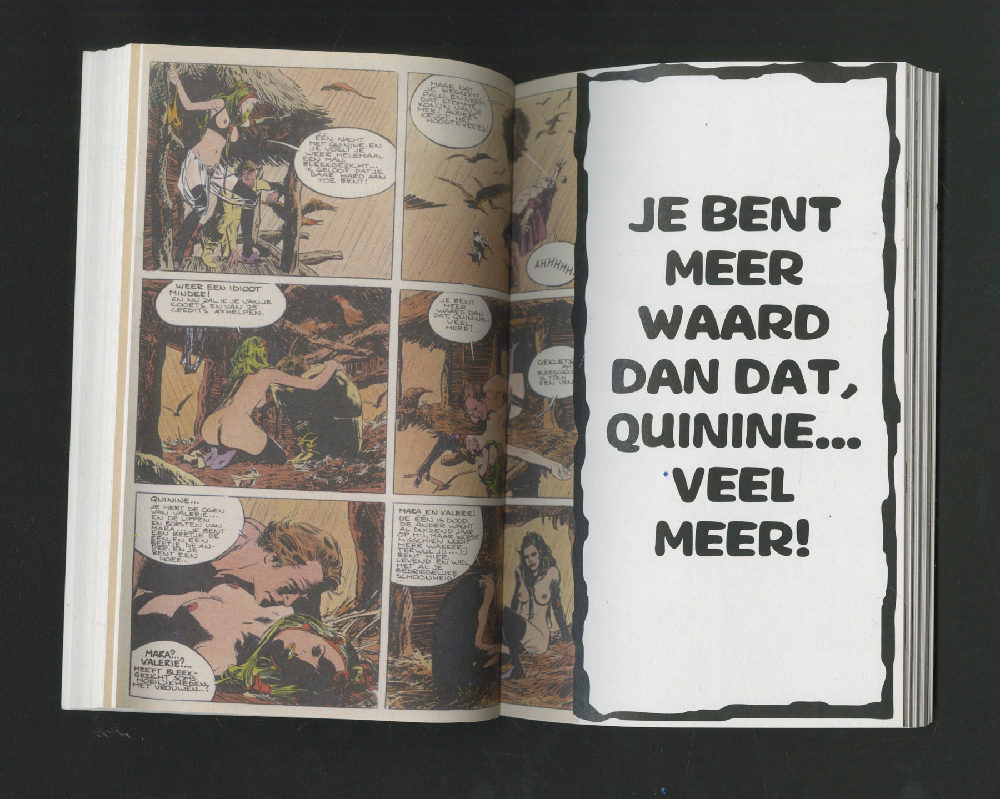

He Looks
2019
graphic design
book making
I have been hunting for second hand soft porn comics from thrift stores and flea markets here for a while.
Tons of them all tell about a heterosexual and heteronormative story, heavily stereotyping and objectifying women and races.
Quite many among them depict women of colour, to highlight the imperial and colonial masculinity in a white perspective.
They keep reminding me that, even though we are witnessing a change in narrative in film/comic/entertainment industry, the male and colonial hegemony is still everywhere, has been mass produced and been surrounding us in an innocent, uncensored format.
While my collection is still growing, I decided to present some of them in a publication, along with four crucial texts on male gaze and colonial gaze.
They keep reminding me that, even though we are witnessing a change in narrative in film/comic/entertainment industry, the male and colonial hegemony is still everywhere, has been mass produced and been surrounding us in an innocent, uncensored format.
While my collection is still growing, I decided to present some of them in a publication, along with four crucial texts on male gaze and colonial gaze.
framework:
work developed in the class of
TYPOGRAPHY by Laura Pappa
 



 
